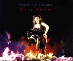

(These lyrics were originally from Wieland Willker's
Moments)
 The Red Shoes page
The Red Shoes page
Album/Era
Alphabetical
Gaffaweb
"Moments Of Pleasure"
The Red Shoes
Written by Kate Bush

- Some moments that I've had
- Some moments of pleasure
- I think about us lying
- Lying on a beach somewhere
- I think about us diving
- Diving off a rock, into another moment
- The case of George the Wipe
- Oh God I can't stop laughing
- This sense of humour of mine
- It isn't funny at all
- Oh but we sit up all night
- Talking about it
- Just being alive
- It can really hurt
- And these moments given
- Are a gift from time
- On a balcony in New York
- It's just started to snow
- He meets us at the lift
- Like Douglas Fairbanks
- Waving his walking stick
- But he isn't well at all
- The buildings of New York
- Look just like mountains through the snow
- Just being alive
- It can really hurt
- And these moments given
- Are a gift from time
- Just let us try
- To give these moments back
- To those we love
- To those who will survive
- And I can hear my mother saying
- "Every old sock meets an old shoe"
- Isn't that a great saying?
- "Every old sock meets an old shoe"
- Here come the Hills of Time
- Hey there Maureen,
- Hey there Bubba,
- Dancing down the aisle of a plane,
- 'S Murph, playing his guitar refrain,
- Hey there Teddy,
- Spinning in the chair at Abbey Road,
- Hey there Michael,
- Do you really love me?
- Hey there Bill,
- Could you turn the lights up?
©1993 Kate Bush Music Ltd.
The Red Shoes page
{kind=link}